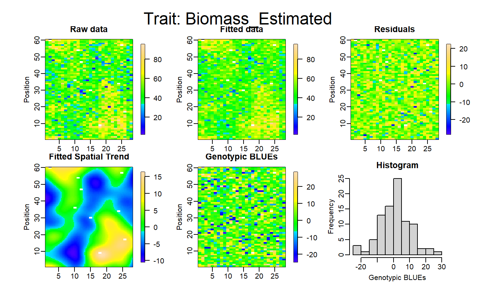
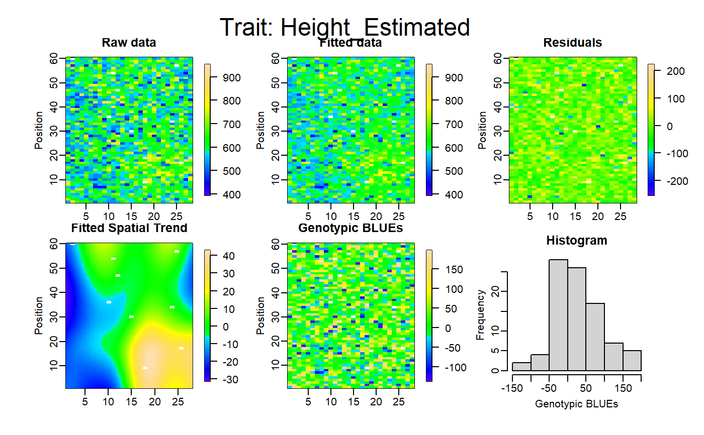
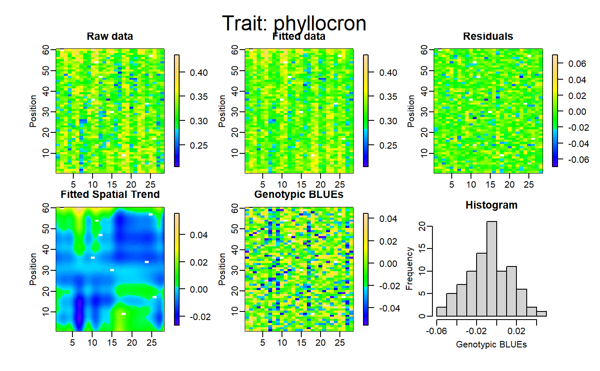
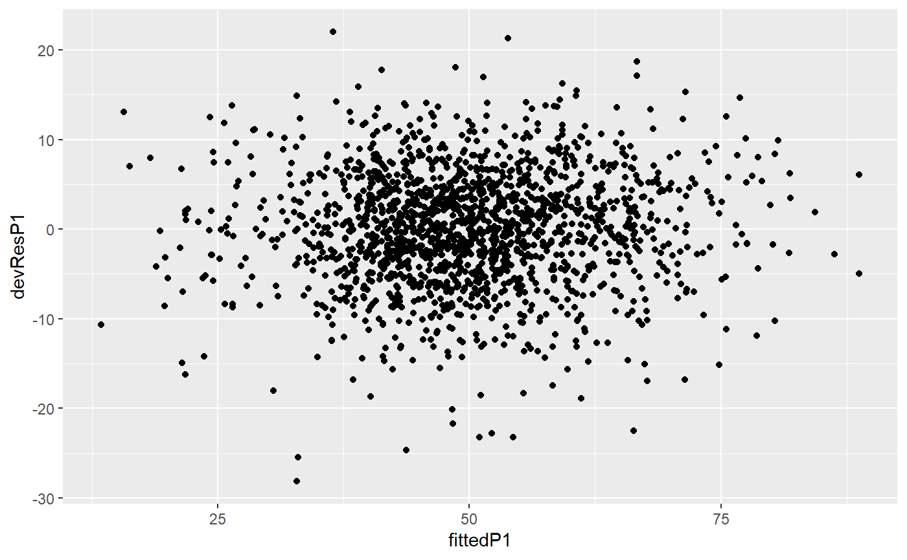
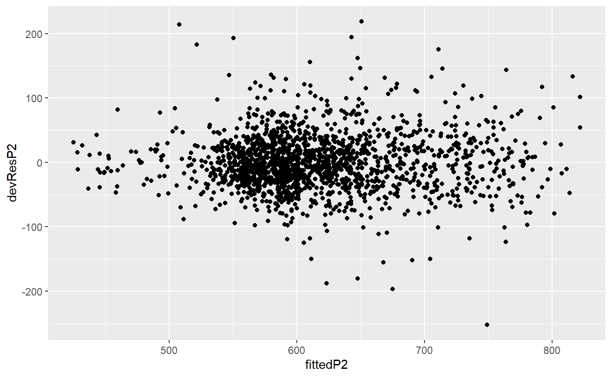
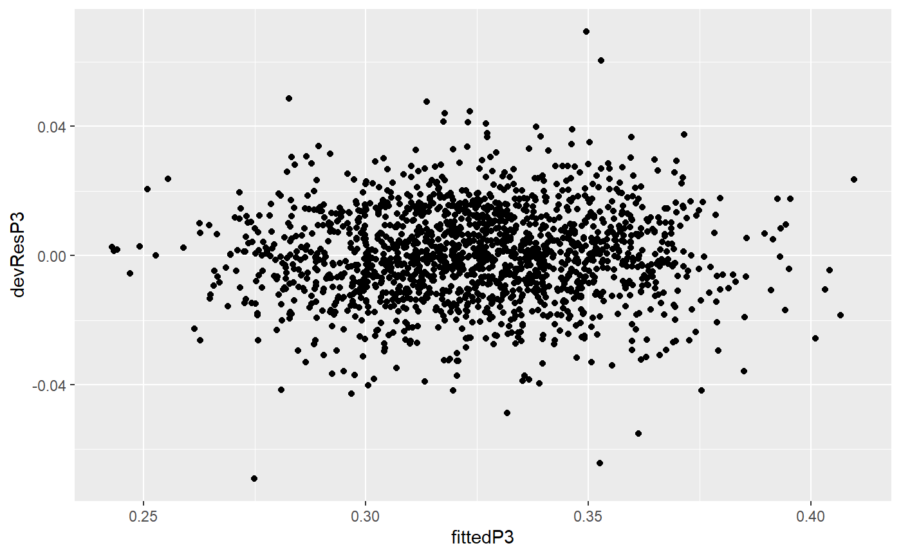

FuncDetectOutlierPlantMaize.Rdfunction to detect plant outliers in a temporal lattice experiment on Maize which can be extended to others experiment types. The criteria needs 3 phenotypes (ex for maize: the estimated biomass, plant height and phyllocron) Please, take a look of the structure of the example dataset: plant4
if for biomass AND phyllocron res_i < mu_res - qnorm(threshold) * sd_res
if for biomass AND plant height res_i > mu_res + qnorm(threshold) * sd_res
FuncDetectOutlierPlantMaize( datain, dateBeforeTrt, param1, param2, param3, paramGeno, paramCol, paramRow, threshold, nCol, nRow, genotype.as.random = FALSE, timeColumn )
| datain | input dataframe, a spatio-temporal data.frame |
|---|---|
| dateBeforeTrt | character, date just before treatment in the experiment |
| param1 | character, name of a phenotypic variable in datain (ex: Biomass) |
| param2 | character, name of a phenotypic variable in datain (ex: plant height) |
| param3 | character, name of a phenotypic variable in datain (ex: phyllocron) |
| paramGeno | character, name of the genotype variable in datain |
| paramCol | character, name of the Line variable in the datain |
| paramRow | character, name of the position variable in datain |
| threshold | numeric, |
| nCol | numeric, nunber of lines in the lattice platform (28 for phenoarch) |
| nRow | numeric, nunber of columns in the lattice platform (60 for phenoarch) |
| genotype.as.random | logical, If TRUE, the genotype is included as random effect in the model. The default is FALSE. (see the SpATS() help) |
| timeColumn | character, name of the time points column in datain (ex: Time) |
return a list of 4 elements
a data.frame with the used data set, the fitted values and residuals calculated by the model, the flag of outliers
a data.frame of the detected "small" outliers
a data.frame of the detected "big" outliers
A list of the SpATS results for param1 (see the SpATS() help)
A list of the SpATS results for param2 (see the SpATS() help)
A list of the SpATS results for param3 (see the SpATS() help)
see SpATS() from the SpATS R library The input dataset must contain the following columns: In the case of a plant experiment in phenoarch platform
the estimated biomass, numeric
the estimated plant height, numeric
the estimated phyllocron, numeric
the genotype id, character
the lines in the greenhouse or lattice, numeric
the columns in the greenhouse or lattice, numeric
In other kind of lattice platform
param1 a numeric phenotypic parameter
param2 a numeric phenotypic parameter
param3 a numeric phenotypic parameter
the genotype id, character
the lines in the platform or lattice, numeric
the columns in the platform or lattice, numeric
# \donttest{ library(ggplot2) test<-FuncDetectOutlierPlantMaize(datain=PAdata,dateBeforeTrt="2017-04-27", param1="Biomass_Estimated",param2="Height_Estimated", param3="phyllocron",paramGeno="Genotype", paramCol="Col",paramRow="Row", threshold=0.95,nCol=28,nRow=60,genotype.as.random=FALSE, timeColumn = "Time") plot(test$m1)#> Time plantId Genotype Treatment Population Position Line #> 1 2017-04-27 05_03 GenoA6 WW Panel1 3 5 #> 2 2017-04-27 06_57 GenoA57 WW Panel1 57 6 #> 3 2017-04-27 07_02 GenoB7 WD Panel2 2 7 #> 4 2017-04-27 07_18 GenoB11 WD Panel2 18 7 #> 5 2017-04-27 09_57 GenoB3 WD Panel2 57 9 #> 6 2017-04-27 12_50 GenoA30 WD Panel1 50 12 #> 7 2017-04-27 13_28 GenoA27 WD Panel1 28 13 #> 8 2017-04-27 13_30 GenoA42 WD Panel1 30 13 #> 9 2017-04-27 14_36 GenoA17 WW Panel1 36 14 #> 10 2017-04-27 17_49 GenoB20 WD Panel2 49 17 #> 11 2017-04-27 18_15 GenoA22 WW Panel1 15 18 #> 12 2017-04-27 18_41 GenoA20 WW Panel1 41 18 #> 13 2017-04-27 21_43 GenoA18 WD Panel1 43 21 #> 14 2017-04-27 22_56 GenoA7 WW Panel1 56 22 #> 15 2017-04-27 25_42 GenoA29 WW Panel1 42 25 #> 16 2017-04-27 27_48 GenoB23 WW Panel2 48 27 #> 17 2017-04-27 28_01 GenoA45 WD Panel1 1 28 #> 18 2017-04-27 28_37 GenoA29 WD Panel1 37 28 #> Biomass_Estimated LA_Estimated Height_Estimated count_leaf phyllocron TT R #> 1 19.053046 0.04054923 496.8150 NA 0.2866803 NA 5 #> 2 26.710540 0.04348831 682.7700 NA 0.3491393 NA 6 #> 3 31.545385 0.05775239 597.6300 NA 0.2395393 NA 7 #> 4 23.917150 0.04065245 476.4375 NA 0.2637236 NA 7 #> 5 44.095749 0.06336016 506.3025 NA 0.2977607 NA 9 #> 6 41.800552 0.06643003 694.5675 NA 0.2981148 NA 12 #> 7 9.439104 0.02706301 575.1075 NA 0.2605263 NA 13 #> 8 29.777812 0.04720002 741.7988 NA 0.2596730 NA 13 #> 9 6.538781 0.02208032 481.1400 NA 0.2058197 NA 14 #> 10 2.735184 0.02487973 478.2113 NA 0.2364853 NA 17 #> 11 40.809394 0.05455394 733.8375 NA 0.3296840 NA 18 #> 12 38.077743 0.05350347 567.1463 NA 0.3233634 NA 18 #> 13 29.502695 0.04313317 525.4425 NA 0.2540708 NA 21 #> 14 49.972882 0.07000937 736.8900 NA 0.3138175 NA 22 #> 15 28.169621 0.04284785 492.7725 NA 0.3175074 NA 25 #> 16 12.484720 0.03674674 551.2650 NA 0.2558459 NA 27 #> 17 21.620858 0.04142434 651.7500 NA 0.3087944 NA 28 #> 18 33.709486 0.05006771 502.4250 NA 0.2940863 NA 28 #> C devResP1 devResP2 devResP3 fittedP1 fittedP2 fittedP3 #> 1 3 -24.65652 -252.051084 -0.03212489 43.70957 748.8661 0.3188052 #> 2 57 -21.68928 58.741134 -0.03576921 48.39982 624.0289 0.3849086 #> 3 2 -15.53607 36.153866 -0.04149007 47.08145 561.4761 0.2810294 #> 4 18 -12.41711 -57.000785 -0.03814611 36.33426 533.4383 0.3018697 #> 5 57 -15.65752 10.851758 -0.02536935 59.75327 495.4507 0.3231301 #> 6 50 -13.64368 18.574363 -0.02539854 55.44423 675.9931 0.3235133 #> 7 28 -14.22699 -49.386121 -0.03700164 23.66609 624.4936 0.2975280 #> 8 30 -14.61140 21.019183 -0.03084497 44.38921 720.7796 0.2905180 #> 9 36 -14.94456 -124.456121 -0.06904976 21.48334 605.5961 0.2748694 #> 10 49 -10.63955 -196.665692 -0.02631130 13.37473 674.8769 0.2627966 #> 11 15 -17.47116 -1.654703 -0.03217222 58.28055 735.4922 0.3618562 #> 12 41 -13.12194 -23.986932 -0.02567852 51.19968 591.1332 0.3490420 #> 13 43 -22.76087 -82.890463 -0.04273011 52.26356 608.3330 0.2968009 #> 14 56 -12.65982 -21.910579 -0.02585889 62.63271 758.8006 0.3396764 #> 15 42 -20.10408 -117.653029 -0.03311315 48.27370 610.4255 0.3506206 #> 16 48 -18.03684 -100.787582 -0.03660976 30.52156 652.0526 0.2924556 #> 17 1 -16.82632 -14.777683 -0.02389344 38.44717 666.5277 0.3326879 #> 18 37 -14.21707 -93.058262 -0.02837121 47.92656 595.4833 0.3224575 #> mean.devP1 sd.devP1 mean.devP2 sd.devP2 mean.devP3 sd.devP3 #> 1 1.240996e-14 6.413921 -1.621669e-13 44.29345 3.794596e-16 0.01446087 #> 2 1.240996e-14 6.413921 -1.621669e-13 44.29345 3.794596e-16 0.01446087 #> 3 1.240996e-14 6.413921 -1.621669e-13 44.29345 3.794596e-16 0.01446087 #> 4 1.240996e-14 6.413921 -1.621669e-13 44.29345 3.794596e-16 0.01446087 #> 5 1.240996e-14 6.413921 -1.621669e-13 44.29345 3.794596e-16 0.01446087 #> 6 1.240996e-14 6.413921 -1.621669e-13 44.29345 3.794596e-16 0.01446087 #> 7 1.240996e-14 6.413921 -1.621669e-13 44.29345 3.794596e-16 0.01446087 #> 8 1.240996e-14 6.413921 -1.621669e-13 44.29345 3.794596e-16 0.01446087 #> 9 1.240996e-14 6.413921 -1.621669e-13 44.29345 3.794596e-16 0.01446087 #> 10 1.240996e-14 6.413921 -1.621669e-13 44.29345 3.794596e-16 0.01446087 #> 11 1.240996e-14 6.413921 -1.621669e-13 44.29345 3.794596e-16 0.01446087 #> 12 1.240996e-14 6.413921 -1.621669e-13 44.29345 3.794596e-16 0.01446087 #> 13 1.240996e-14 6.413921 -1.621669e-13 44.29345 3.794596e-16 0.01446087 #> 14 1.240996e-14 6.413921 -1.621669e-13 44.29345 3.794596e-16 0.01446087 #> 15 1.240996e-14 6.413921 -1.621669e-13 44.29345 3.794596e-16 0.01446087 #> 16 1.240996e-14 6.413921 -1.621669e-13 44.29345 3.794596e-16 0.01446087 #> 17 1.240996e-14 6.413921 -1.621669e-13 44.29345 3.794596e-16 0.01446087 #> 18 1.240996e-14 6.413921 -1.621669e-13 44.29345 3.794596e-16 0.01446087 #> lower.devP1 lower.devP2 lower.devP3 upper.devP1 upper.devP2 upper.devP3 #> 1 -10.54996 -72.85624 -0.02378602 10.54996 72.85624 0.02378602 #> 2 -10.54996 -72.85624 -0.02378602 10.54996 72.85624 0.02378602 #> 3 -10.54996 -72.85624 -0.02378602 10.54996 72.85624 0.02378602 #> 4 -10.54996 -72.85624 -0.02378602 10.54996 72.85624 0.02378602 #> 5 -10.54996 -72.85624 -0.02378602 10.54996 72.85624 0.02378602 #> 6 -10.54996 -72.85624 -0.02378602 10.54996 72.85624 0.02378602 #> 7 -10.54996 -72.85624 -0.02378602 10.54996 72.85624 0.02378602 #> 8 -10.54996 -72.85624 -0.02378602 10.54996 72.85624 0.02378602 #> 9 -10.54996 -72.85624 -0.02378602 10.54996 72.85624 0.02378602 #> 10 -10.54996 -72.85624 -0.02378602 10.54996 72.85624 0.02378602 #> 11 -10.54996 -72.85624 -0.02378602 10.54996 72.85624 0.02378602 #> 12 -10.54996 -72.85624 -0.02378602 10.54996 72.85624 0.02378602 #> 13 -10.54996 -72.85624 -0.02378602 10.54996 72.85624 0.02378602 #> 14 -10.54996 -72.85624 -0.02378602 10.54996 72.85624 0.02378602 #> 15 -10.54996 -72.85624 -0.02378602 10.54996 72.85624 0.02378602 #> 16 -10.54996 -72.85624 -0.02378602 10.54996 72.85624 0.02378602 #> 17 -10.54996 -72.85624 -0.02378602 10.54996 72.85624 0.02378602 #> 18 -10.54996 -72.85624 -0.02378602 10.54996 72.85624 0.02378602 #> lower.spatsP1 lower.spatsP2 lower.spatsP3 upper.spatsP1 upper.spatsP2 #> 1 0 0 0 1 1 #> 2 0 1 0 1 1 #> 3 0 1 0 1 1 #> 4 0 1 0 1 1 #> 5 0 1 0 1 1 #> 6 0 1 0 1 1 #> 7 0 1 0 1 1 #> 8 0 1 0 1 1 #> 9 0 0 0 1 1 #> 10 0 0 0 1 1 #> 11 0 1 0 1 1 #> 12 0 1 0 1 1 #> 13 0 0 0 1 1 #> 14 0 1 0 1 1 #> 15 0 0 0 1 1 #> 16 0 0 0 1 1 #> 17 0 1 0 1 1 #> 18 0 0 0 1 1 #> upper.spatsP3 flagLowerSpats flagUpperSpats #> 1 1 0 1 #> 2 1 0 1 #> 3 1 0 1 #> 4 1 0 1 #> 5 1 0 1 #> 6 1 0 1 #> 7 1 0 1 #> 8 1 0 1 #> 9 1 0 1 #> 10 1 0 1 #> 11 1 0 1 #> 12 1 0 1 #> 13 1 0 1 #> 14 1 0 1 #> 15 1 0 1 #> 16 1 0 1 #> 17 1 0 1 #> 18 1 0 1#> Time plantId Genotype Treatment Population Position Line #> 1 2017-04-27 07_55 GenoB3 WW Panel2 55 7 #> 2 2017-04-27 11_29 GenoA36 WW Panel1 29 11 #> 3 2017-04-27 17_17 GenoB24 WW Panel2 17 17 #> Biomass_Estimated LA_Estimated Height_Estimated count_leaf phyllocron TT R #> 1 71.41276 0.09273917 569.7450 NA 0.3697377 NA 7 #> 2 36.67895 0.06258974 704.2200 NA 0.3088115 NA 11 #> 3 58.48472 0.07994443 769.4362 NA 0.3232828 NA 17 #> C devResP1 devResP2 devResP3 fittedP1 fittedP2 fittedP3 mean.devP1 #> 1 55 13.80518 76.96394 0.03304748 57.60759 492.7811 0.3366902 1.240996e-14 #> 2 29 12.46516 78.23241 0.01048244 24.21379 625.9876 0.2983290 1.240996e-14 #> 3 17 22.03344 73.26826 0.03389641 36.45128 696.1680 0.2893864 1.240996e-14 #> sd.devP1 mean.devP2 sd.devP2 mean.devP3 sd.devP3 lower.devP1 #> 1 6.413921 -1.621669e-13 44.29345 3.794596e-16 0.01446087 -10.54996 #> 2 6.413921 -1.621669e-13 44.29345 3.794596e-16 0.01446087 -10.54996 #> 3 6.413921 -1.621669e-13 44.29345 3.794596e-16 0.01446087 -10.54996 #> lower.devP2 lower.devP3 upper.devP1 upper.devP2 upper.devP3 lower.spatsP1 #> 1 -72.85624 -0.02378602 10.54996 72.85624 0.02378602 1 #> 2 -72.85624 -0.02378602 10.54996 72.85624 0.02378602 1 #> 3 -72.85624 -0.02378602 10.54996 72.85624 0.02378602 1 #> lower.spatsP2 lower.spatsP3 upper.spatsP1 upper.spatsP2 upper.spatsP3 #> 1 1 1 0 0 0 #> 2 1 1 0 0 1 #> 3 1 1 0 0 0 #> flagLowerSpats flagUpperSpats #> 1 1 0 #> 2 1 0 #> 3 1 0# }